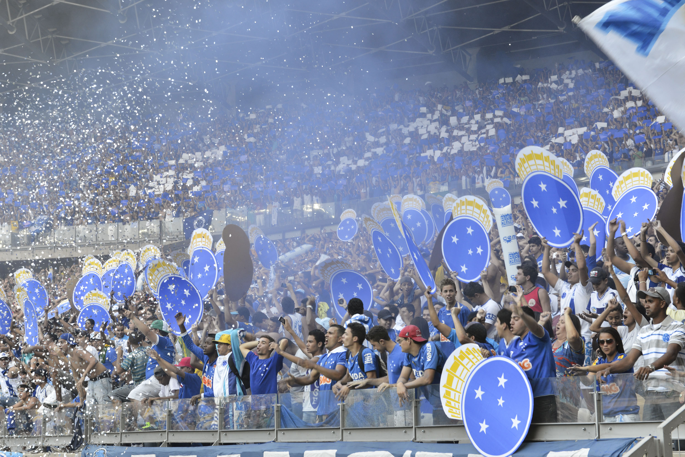
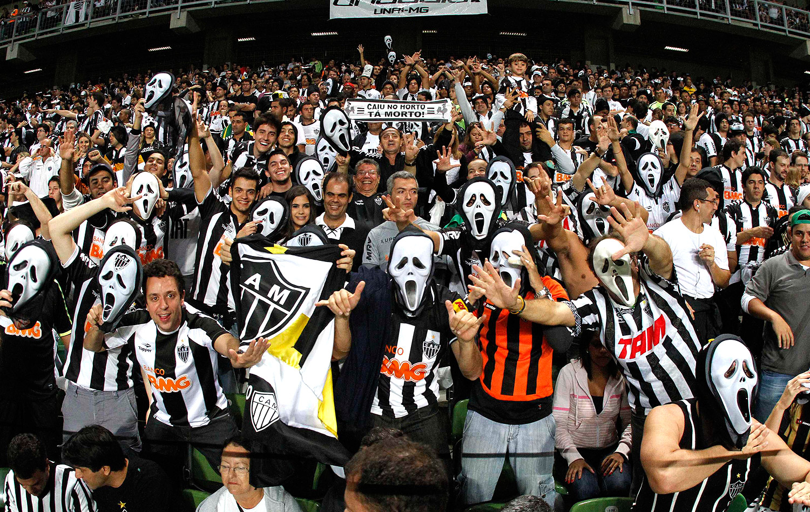

- 4 de maio de 1969 - Mineirão: 123 mil pessoas
- 9 de outubro de 1977 - Mineirão: 122 mil pessoas
- 8 de novembro de 1980 - Mineirão: 115 mil pessoas
- 2 de junho de 1968 - Mineirão: 110 mil pessoas
- 15 de dezembro de 1974 - Mineirão: 109 mil pessoas

